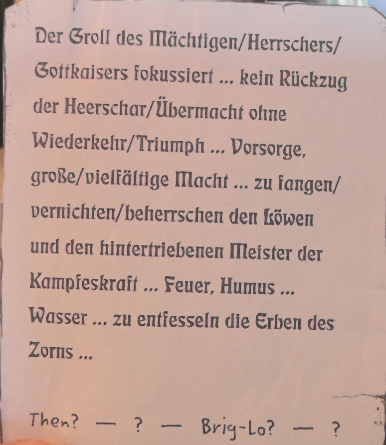

Baronins Tochter (?)
S4
- S4 wird von der Gruppe geholt und über die Lage aufgeklärt; spricht mit Muchacho (ob identisch mit Gerone von Berg, der Tochter des Reichsmarschalls, nennt die Chronik nicht)
python helden\_tools\render-held.py serve illaen-baernhold --open
Reinigt Nahrung und Getränke von allen Giften und Krankheitskeimen; verdorbene Speisen werden wieder genießbar. Die Probe ist um die doppelte Giftstufe/Krankheitsstufe erschwert; stark verdorbene Nahrung kann zusätzlich +2 bis +12 bedeuten.
Wirkt nur auf Nahrung (kein Gift auf Klingen oder in Phiolen). Elfische Repräsentation wandelt sogar Wein in Traubensaft um; Achaz-Form lässt manche für Menschen giftige Speisen unverändert.
Verändert Farbe und Schnitt (nicht die Stoffart) eines Kleidungsstücks nach Wunsch der Zaubernden. Die Hälfte der TaP* einer gedanklich ausgeführten Schneidern-Probe erleichtert die Zauberprobe. ZfP* gibt die handwerkliche Qualität an (Werte über 10 = Meisterarbeit). Stoff aus dem Nichts erschaffen ist nicht möglich.
Lässt die Magierin die Zaubermatrix eines Artefakts, magischen Wesens oder wirkenden Zaubers sehen. Kein göttliches/karmales Wirken erkennbar. Je mehr ZfP* übrig bleiben, desto mehr Details:
| ZfP* | Erkennbares |
|---|---|
| 1 | Merkmale + Repräsentation; Klasse des Wesens (Elementar, Fee, Geist, Chimäre, Untoter, Dämon) |
| 4 | Einzelheiten des Zaubermodus (z. B. „noch 3 Stunden"); nähere Klassifikation des Wesens; Erkennen ob Zauberwirker verkleidet ist |
| 7 | Versteckte Zaubereien und Varianten; Fähigkeiten ausloten |
| 8+ | Signatur erkennen (Erschaffer, Akademiestil; benötigt auch SF) |
Erschwernisse: Fremde Repräsentation +2 bis +7; willentlich verborgene Zauberei +ZfP* des Tarnzaubers; Reststrahlung nicht mehr vorhandener Zauber mind. +7; Artefakte/Elixiere nach gesonderter Tabelle (→ WdZ S. 51f.).
Verlängerung: Pro weiterer halber Stunde neue Probe; ZfP* addieren; Selbstbeherrschungs-Probe nötig (Erschwernis +1 pro abgelaufener ½ Stunde). ODEM-Vorbereitung: halbe ZfP* helfen bei Probenerschwernis.
Keine expliziten Varianten (nur Modifikationen Zauberdauer, Kosten, Reichweite).
Verleiht der Zaubernden eine zusätzliche „stählerne Haut" als Rüstungsschutz. Max. ZfW/2 Zusatz-RS. Keine Behinderung durch die magische Rüstung. Wirkt wie stoffliche Rüstung gegen materielle Angriffe (einschließlich Dämon- und Elementar-AT mit materieller Komponente), aber nicht gegen Zauber ohne materielle Schadens-Komponente (z. B. FULMINICTUS). Hält auch Tierbisse ab, die SP statt TP anrichten.
Kostenformel: Lorindel (RS 3 → RS 7): 4² − 5/2 = 16 − 2,5 ≈ 13 AsP.
Hebt eine Eigenschaft des Verzauberten um ZfP*/3 Punkte für 1 Stunde. Berührungsort hängt von der Eigenschaft ab (Oberarme für KK, Schläfen für KL usw.). LE/AU/AE werden durch Grundwerte nicht neu berechnet; AT/PA und andere Basiswerte können abweichen. Scharlatanisch: Reichweite selbst, Zielobjekt nur freiwillig.
Eigenschaft-Sonderregeln:
Heilt Wunden und innere Verletzungen: Pro AsP 1 LeP zurück (max. ZfW × 2 LeP). Auch Selbstheilung möglich (Zuschläge für Wunden/niedrige LE beachten). Stoppt Krankheit/Gift nicht.
Grobe Einschätzung der Fähigkeiten und Fertigkeiten eines Gegenübers. Keine Werte, nur Einschätzungen — abhängig von Fachkenntnissen des Elfen selbst. Informationsmenge nach ZfP*:
| ZfP* | Inhalt |
|---|---|
| 1 | Intelligenz, Gelehrtheit, körperliche Verfassung, handwerkl. Geschick, Kampfkraft, Zaubermacht (unfähig / durchschn. / fähig / sehr fähig) |
| 4 | Konkretere Angaben; bes. auffällige Werte angedeutet |
| 7 | SE-Ausprägung; Merkmalskenntnis bei Zauberkundigen |
| 10 | Bestes Talent, Kampfstil (trickreich/brutal); Seelentier erahnbar |
Erzeugt im Geist des Opfers einen grellen Lichtblitz → blendet und desorientiert für ZfW/2 Aktionen. Anschließend vollständig wiederhergestellt.
Auswirkungen während der Wirkungsdauer:
SF Blindkampf: Kampfabzüge halbiert. SF Konzentrationsstärke: Zauberprobenabzüge halbiert.
Immun: Dämonen, Geister, Untote, Golems, Elementarwesen. Für Tiere abhängig vom Gesichtssinn-Anteil.
Sichert Behältnisse (Briefe, Phiolen, Kassetten, max. Truhen) vor unbefugtem Öffnen. Bei Entladung: gesamter Inhalt verbrennt unwiederbringlich.
Öffnungserschwernis: ZfP* auf Kraftprobe, ZfP* × 2 auf Talent-/Zauberproben.
Unbefugtes Öffnen: Schlösser Knacken, Gewalt, FORAMEN o.ä. → Probe auf erschwerten Wert. Bei Misslingen → CUSTODOSIGIL entlädt sich.
Kann als Falle mit brennbarer Füllung verwendet werden.
Erschafft für sich oder einen Gefährten optische Doppelgänger, die sich synchron bewegen. Gegner können kaum feststellen, wer der echte Zaubernde ist.
Anzahl Doppelgänger nach ZfW: ab ZfW 7 = 2, ab ZfW 11 = 3, ab ZfW 15 = 4, ab ZfW 18 = 5.
Trefferwahrscheinlichkeit bei unpariertem Angriff:
Gegner: Parieren des Zauberers um (Anzahl Doppelgänger) erschwert. Auf engstem Raum (Ecke): doppelte Trefferwahrscheinlichkeit.
Nicht wirkend gegen Kämpfer, die sich nicht optisch orientieren (Blindkampf, geschlossene Augen, viele Dämonen/Untote).
Realitätsdichte: ZfP*/2 + 7 Punkte. Illusion zu erkennen hilft im Kampf nicht.
Erzeugt eine bläulich-weiß strahlende, stationäre Lichtkugel. Maximale Leuchtkraft nach ZfP*:
| ZfP* | Helligkeit |
|---|---|
| 1 | Glühwürmchen |
| 2–3 | Kerze |
| 4–6 | Fackel |
| 7–9 | Lagerfeuer |
| ab 15 | sonnenhell |
Leuchtradius: ZfP* Schritt (Helligkeit nimmt nach außen ab). Kaltes Licht, keine Verbrennungen. Zone verbleibt an Ort und Stelle (auch wenn Zauberer sich entfernt). Kann verhüllt werden.
Erzeugt eine undurchdringliche, transparente Wand (max. 2×2 Schritt), fix an einem Objekt im Blickfeld der Zauberin. Ist kein messerscharfer Schneidgegenstand: wirft Reiter aus dem Sattel, köpft sie aber nicht.
Undurchdringlich für physische Materie und Projektile. Schützt nicht gegen: Zauber (auch elementare wie IGNIFAXIUS), halbmaterielle Wesen (Geister, nicht manifeste Dämonen), Hitze, Kälte, Licht.
Unsichtbare Welle magischen Schadens, die jede gewöhnliche Rüstung durchdringt. Schaden: 2W6 + ZfP* SP, direkt von der LeP abgezogen. Erzeugt keine regeltechnischen Wunden (kein Heilkunde Wunden nötig). Weder RS noch ARMATRUTZ helfen.
Klassische Formel für den letzten Ausweg — kaum Vorbereitung oder Konzentration nötig.
Unsichtbare Schutzkuppel (Halbkugel, 3 Schritt Radius). Schild ist "orientiert" — Zauber aus der Kuppel heraus möglich, nicht aber Angriffe von innen gegen den Magier.
Absorbiert direkte magische Schäden (Schaden-Merkmal-Zauber, Schaden durch Dämonen/Elementare/Geister, IGNISPHAERO-Flammenwolke, Flammenschwert-Angriffe) in Höhe von eingesetzten AsP + doppelten ZfP*. Danach löst sich der Schild auf.
Schützt nicht gegen: magisch erhöhte Waffenschäden, Waffen aus magischen Materialien, physische Attacken magischer Wesen (Drache, Einhorn), Verwandlung/Beherrschung (Grundvariante).
Schild bewegt sich mit dem Magier.
Die drei Varianten können miteinander kombiniert werden (je +2 Aktionen Zauberdauer je Variante).
Der Magier erscheint seinem Opfer als bedrohliche Gestalt. MR des Opfers wird um die Hälfte der stärksten vorhandenen Angst-Schlechten-Eigenschaft reduziert. Reaktion nach ZfP*:
Wirkt gegen alle denkenden Lebewesen und einige Geisterwesen (Meisterentscheid). Schleimgetier, Insekten, Elementare, Untote und Dämonen unbeeindruckt.
Mehrere Opfer-Variante: 6 AsP pro Opfer.
Aus den Fingern des Zaubernden schießt eine Feuerlanze. Vor der Probe muss die Würfelanzahl angesagt werden (max. ZfW). Alle Würfelpunkte summieren sich zu TP. Übersteigen die erwürfelten TP die AsP, misslingt der Zauber (ab ZfW 11 optional: verbraucht nur verfügbare AsP).
RS mindert die TP; für je 10 TP verliert die Rüstung 1 RS-Punkt (nicht bei natürlicher/magischer Rüstung). Ausweichen mit +5 Erschwernis möglich; pro Punkt besser ausgewichen kann ein Schadenswürfel abgezogen werden.
Elementarer Sekundärschaden (Feuer): RS sinkt je 10 TP um 1; brennbare Materialien entzünden sich.
Aus den Händen der Magierin steigt eine Feuerkugel (max. GS 15), die beliebig dirigiert und zur Explosion gebracht werden kann. Bei Konzentrationsverlust oder Sichtverlust explodiert sie sofort.
Schaden am Zentrum: 5W6+ZfP*/2 TP; pro Schritt Entfernung sinkt Schaden um 1 + niedrigster Würfel. RS der Opfer wird abgezogen. Bei mehr als 10 erlittenen TP: RS-Verlust wie IGNIFAXIUS. Brennbare Objekte entzünden sich.
Legt eine bewegte Illusion über das Gesicht einer Person, sodass sie einer anderen gleicht. Wirkt nur auf Gesichtszüge und Haupthaar, nicht auf Mimik, Aussprache, Größe oder Körperbau. Bekanntes Gesicht: bis zu 7 Punkte Erschwernis je nach Bekanntheit. Vollkommen neues Gesicht: erste Probe +7 erschwert, dann stufenweise weniger.
Realitätsdichte: ZfP*/2 +7. Bei Misslingen entsteht eine Karikatur; bei Patzer ein so grässliches Antlitz, dass der Zauberer die Öffentlichkeit meiden sollte.
Erzeugt kleine elementare Manifestationen (Funken, Wassertropfen, Windstoß, Erdklumpen). Flüchtige Effekte halten 1 Minute, bleibende Formen halten ZfP* SR.
Erkennt Zauberei als rötlichen Schimmer um das Ziel. Detailgrad nach ZfP*:
Erkennt nicht: Art der Kraft (Repr., Merkmale), göttliches Wirken, Karmaenergie. Zu starke Quellen erscheinen als hellrotes Gleißen oder Teclador-Effekt (Blendung, KL-Minderung).
Probenmodifikatoren (Tabelle S. 198): −1 pro gebundenem pAsP; +ZfP* für SCHLEIER/HELLSICHT TRÜBEN; Zeit seit dem Zauber (+4/+6/+8/+10/+12/+14/+16/+18 für SR/Std./Tag/Woche/Monat/Jahr/Jahrzehnt/Jahrhundert); Wesen +5 bis −7 je nach Stärke.
Verändert Haupthaar und/oder Bart nach Belieben — von einfachem Richten bis zur purpurfarbenen hüftlangen Mähne. Haar wächst während Wirkungsdauer nicht weiter. Verwandlung von „astralaktivem Haar" (Vorteil Zauberhaar / Nachteil Körpergebundene Kraft) um 7 Punkte erschwert.
Erhöht die MR um ZfP* Punkte. Gegen Zauber mit den Merkmalen Einfluss, Hellsicht, Herrschaft und Verständigung zusätzlich +2 MR je Merkmal.
Reinigt Zauberer und Kleidung von jeder Verschmutzung nichtmagischen Ursprungs (Straßenstaub, getrocknetes Blut). Ausgenommen: dauerhafte chemische Veränderungen (Färbung, Tätowierungen). Reinigung von ACCURATUM-Kleidung: +3 Probe. Qualität der Reinigung entspricht ZfP* (10 = fürstlich sauber).
Erkennt Gefühle und Stimmungen des Gegenübers: Grundstimmung (leicht), Gefühle gegenüber dem Zauberer (etwas schwerer), unterschwellige Gefühle (schwerer), Gefühle gegenüber anderen Personen/Konzepten (am schwersten). Kein echtes Gedankenlesen; nicht gegen nicht-fühlende Wesen (Untote, Dämonen). Versucht Beobachteter seine Gefühle zu unterdrücken: Selbstbeherrschungs-Probe + ZfP*.
Regeln:
Quelle: WdZ S. 109 (Reptil der Schuppenhaut: S. 108)
Regeln:
Quelle: WdZ S. 109 (Einschränkung: S. 108)
Regeln:
Quelle: WdZ S. 110
Wirkung: Besitzt der Magier einen Stab mit diesem Zauber, spart er bei jedem Zaubervorgang (jeder abgelegten Zauberprobe) genau 1 AsP — egal ob der Zauber gelingt oder misslingt.
Beispiele aus dem Regelwerk:
Wichtige Einschränkung: Bei misslungenen Zaubersprüchen wird zuerst halbiert (Misslingens-Halbierung), dann der gesparte AsP abgezogen. Jeder Zauber — ob ge- oder misslungen — kostet jedoch nach dem Sparvorgang mindestens 1 AsP. Der Kraftfokus greift also nicht, wenn die Kosten ohnehin schon 1 AsP betragen würden.
Fazit: Der Kraftfokus gilt automatisch für jeden Zauber ohne Ausnahme, aber der Mindestwert von 1 AsP pro Zauber bleibt immer bestehen.
Wirkung: Ein Stab mit Merkmalsfokus erleichtert alle Zauberproben für Formeln, die ein bestimmtes Merkmal aufweisen, um 1 Punkt (Buch: „um einen Punkt erleichtert“).
Merkmalswahl: Das gewünschte Merkmal wird bei der Durchführung des Rituals festgelegt und ist danach unveränderlich. Das Merkmal muss dem Magier zu diesem Zeitpunkt bereits bekannt sein — er muss die entsprechende Merkmalskenntnis besitzen.
Mehrfach-Bindung: Der Merkmalsfokus kann mehrfach auf denselben Stab gebunden werden, jedoch immer nur mit unterschiedlichen Merkmalen. Dadurch können Zauber, die mehrere Merkmale aufweisen und alle per Merkmalsfokus abgedeckt sind, kumulativ erleichtert werden — etwa um 2 Punkte bei Übereinstimmung in zwei Merkmalen.
Fazit: Das Merkmal wird fest bei Erschaffung gewählt (nicht flexibel). Die Erleichterung gilt für die Zauberprobe selbst.
Wirkung: Der Modifikationsfokus erlaubt dem Anwender, beim Wirken eines Zaubers eine zusätzliche Spontane Modifikation vorzunehmen — über den üblichen Wert hinaus (vgl. WdZ S. 19). Das heißt: Darf ein Magier normalerweise z.B. eine Spontane Modifikation pro Zauber anwenden, kann er mit diesem Stabzauber zwei anwenden.
Mehrfach-Bindung: Der Modifikationsfokus kann mehrfach auf denselben Stab gelegt werden. Jede weitere Bindung erlaubt eine weitere zusätzliche Spontane Modifikation.
Berührungs-Bonus: Bereits mit einem einzigen Modifikationsfokus auf dem Stab kann der Besitzer den Stab anstelle seiner Hand einsetzen, wann immer ein Zauber Berührung des Ziels erfordert:
Fazit: Mehrere Modifikationsfoki auf einem Stab sind möglich und stapeln sich. Der Berührungs-Bonus ist bereits beim ersten Modifikationsfokus aktiv.
Regeln:
Quelle: WdZ S. 111 (kleine Stäbe, Einschränkung: S. 108)
Regeln:
Quelle: WdZ S. 109 (Einschränkung: S. 108)
Wirkung: Der Magier richtet einen Teil des Stab-Fassungsvermögens als Speicherkammer ein. In diese Kammer kann er Zauber vorbereitet hinterlegen und später ohne erneutes Sprechen (nur mit der Aktivierungsprobe, s. Auslösung) aktivieren.
Wird ein Dauereffekt-Zauber (Typ A) aus dem Speicher ausgelöst, trägt der Zauberspeicher die Aufrechterhaltung — der Magier muss jedoch den Stab während der gesamten Wirkungszeit berühren. In dieser Zeit kann der Stab zu keinem anderen Zweck genutzt werden (kein anderer Speicher, kein Flammenschwert, kein Seil usw.).
Fazit: Zauberspeicher ermöglicht den blitzschnellen Einsatz komplex vorbereiteter Zauber (1 Aktion statt volle Zauberdauer). Kerneinschränkungen: Kraftfokus Voraussetzung, +2 Erschwernis beim Einlegen, Berührungspflicht bei Dauereffekten, bei einem Patzer werden (evtl.) weitere gespeicherte Zauber ausgelöst.
Allgemeiner Regeltext: Rituale — Grundregeln, Apport.
Typ: ZH · Voraussetzungen: IN 13 · Kosten: 100 AP · Verbreitung: 6 (vor allem bei Vollzauberern)
Wer diese Sonderfertigkeit beherrscht, kann durch reine Willensanstrengung LeP in AsP umwandeln.
Durchführung:
Erleichterung durch Thonnys (seltenes Kraut, ZBA S. 269):
Synergien: Konzentrationsstärke erleichtert die Probe um zusätzlich 2 Punkte.
Typ: Z (nur Vollzauberer) · Voraussetzungen: KL 12, IN 12 · Verbreitung: 6
Kosten:
Effekt: Erlaubt es Vollzauberern, ihren AE-Grundwert dauerhaft zu steigern.
Ablauf:
Voraussetzung für Durchführung: Alle eventuell verlorenen pAsP (permanente Astralpunkte) müssen zuerst zurückgekauft werden.
Variante mit SF Gefäß der Sterne (Voraussetzungen CH 15, IN 13; 250 AP):
Typ: ZH · Voraussetzungen: SF Regeneration II · Kosten: 200 AP (400 AP für Halbzauberer) · Verbreitung: 3
Der Zauberer hat seine Konzentrationstechniken zur nächtlichen Regeneration so weit vervollkommnet, dass der W6-Wurf entfällt und durch einen festen Wert ersetzt wird.
Effekt:
Beispiel: Magier mit KL 15 und Meisterlicher Regeneration: KL/3 = 5; 5+3 = mindestens 8 AsP pro Ruhephase.
Typ: ZH(V) · Voraussetzungen: MU 15 · Kosten: 100 AP · Verbreitung: 5
Schutz der Zauberwirkung gegen äußere Störungen.
Effekt:
Typ: ZHV · Voraussetzungen: IN 12, CH 13 · Kosten: 300 AP (150 AP bei Merkmalskenntnis Kraft) · Verbreitung: 3 (vor allem Druiden, Gildenmagier, Geoden, Schamanen)
Effekt: Durch schiere Konzentration kann bei jedem Zauberspruch oder Ritual ein Astralpunkt eingespart werden.
Bedingungen:
Typ: ZH · Voraussetzungen: Spruchzauberer; skalierend nach Anzahl der bereits bekannten Merkmale · Verbreitung: 1–5 je nach Merkmal
Der Zauberer hat besondere Einblicke in ein spezifisches Zaubermerkmal erhalten und kann alle Zauber mit diesem Merkmal eine Spalte leichter erlernen.
Voraussetzungen für Erwerb weiterer Merkmale:
Kosten:
Merkmal-Stufen:
| Stufe | Merkmale |
|---|---|
| I | Dämonisch (einzelne Domäne), Elementar (einzelnes Element), Geisterwesen, Heilung, Herbeirufung, Illusion, Schaden, Telekinese, Verständigung |
| II | Antimagie, Beschwörung, Eigenschaften, Einfluss, Form, Hellsicht, Herrschaft, Kraft, Objekt, Umwelt |
| III | Dämonisch (gesamt), Elementar (gesamt), Limbus, Metamagie, Temporal |
Spielrelevante Wechselwirkungen:
Typ: ZH · Voraussetzungen: Spruchzauberer; skalierend nach Anzahl der bereits bekannten Merkmale · Verbreitung: 1–5 je nach Merkmal
Der Zauberer hat besondere Einblicke in ein spezifisches Zaubermerkmal erhalten und kann alle Zauber mit diesem Merkmal eine Spalte leichter erlernen.
Voraussetzungen für Erwerb weiterer Merkmale:
Kosten:
Merkmal-Stufen:
| Stufe | Merkmale |
|---|---|
| I | Dämonisch (einzelne Domäne), Elementar (einzelnes Element), Geisterwesen, Heilung, Herbeirufung, Illusion, Schaden, Telekinese, Verständigung |
| II | Antimagie, Beschwörung, Eigenschaften, Einfluss, Form, Hellsicht, Herrschaft, Kraft, Objekt, Umwelt |
| III | Dämonisch (gesamt), Elementar (gesamt), Limbus, Metamagie, Temporal |
Spielrelevante Wechselwirkungen:
Typ: ZH · Verbreitung: 7 (bei der jeweiligen Tradition)
Die Kenntnis der Zauberstrukturen, Rituale, Denkhilfen und Gewohnheiten einer Zaubertradition. Ermöglicht, Zauber in der entsprechenden Repräsentation gemäß ihrer Grundschwierigkeit (Komplexität) zu erlernen.
Bekannte Repräsentationen in Aventurien: Achaz-Kristallomantisch, Borbaradianisch, Druidisch, Elfisch, Geodisch, Gildenmagisch, Hexisch, Scharlatanisch, Schelmisch.
Erste Repräsentation: automatisch durch Profession/Kultur (Gildenmagier erhalten Gildenmagie).
Zweite und weitere Repräsentationen:
| 2. Repräsentation | 3. Repräsentation | |
|---|---|---|
| Voraussetzungen | KL 15, IN 15; 50 ZfP in der fremden Repräsentation | KL 18; 50 ZfP in der fremden Repräsentation |
| Vollzauberer | 2.000 AP | 4.000 AP |
| Halbzauberer | 3.000 AP | nicht möglich |
Zeitaufwand: Mindestens 1 Jahr intensives Studium (kein Abenteuer); Lehrmeister erforderlich.
Kostenvergünstigungen beim Fremdspracherwerb:
Konsequenz für Fremdrepräsentationen: Zauber in einer fremden Repräsentation werden um 2 Spalten schwieriger erlernt. Spontane Modifikationen sind nur in Repräsentationen möglich, die man selbst beherrscht (Ausnahme: SF Matrixverständnis).
Typ: Z (Vollzauberer) · Startwert: 3
Ritualkenntnis (RK) ist das Wissen um die Regeln und Fertigkeiten einer magischen Tradition zur Ritualdurchführung. Jede Tradition hat ihre eigene RK (Gildenmagie, Hexenmagie, Scharlatanerie etc.).
Erwerb:
Anwendung:
Private Ausbildung (Lehrmeister statt Akademie): Gildenmagier erhalten RK (Gildenmagie), Repräsentation (Gildenmagie) und Große Meditation automatisch als Teil der Grundausbildung (bei Vollzauberer-Vorteil).
Typ: ZH(V) · Voraussetzungen: MU 12 · Kosten: 100 AP · Verbreitung: 4
Die Kenntnis der rituellen Technik, die eigene Lebensenergie zur Bezahlung von Zauberkosten einzusetzen (niedrigste Form der Magica Sanguina, per Konventsbeschluss von 743 BF und Codex V/27 genehmigt).
Durchführung:
Zusatzkosten pro Zauber:
Gefahr bei sehr niedrigen LeP:
Einige ausgebildete Viertelzauberer können diese SF erlernen.
Typ: ZH · Voraussetzungen: Spruchzauberer; MU 12, KL 12; SF Zauberkontrolle · Kosten: 300 AP (150 AP bei Merkmalskenntnis Metamagie) · Verbreitung: 3
Effekt: Einen Zauberspruch wirken, dann bis zu MU Aktionen warten, bevor er losgeschickt wird.
Ablauf:
Typ: ZH · Voraussetzungen: Spruchzauberer; KL 12 · Kosten: 100 AP · Verbreitung: 5
Effekte:
Basis für Folge-SF: Zauberkontrolle ist Voraussetzung für Zauber bereithalten, Meisterliche Zauberkontrolle I, Meisterliche Zauberkontrolle II, Zauberroutine und Zauber unterbrechen.
Sonderregel für Elfen: Elfen beherrschen von Natur aus eine eingeschränkte Version dieser SF (nur für elfische Repräsentation). Diese zählt als Zauberkontrolle für den Erwerb höherer SF, solange die verwendeten Zauber in elfischer Repräsentation gesprochen werden. Erwerb der vollständigen SF kostet Elfen nur 50 AP.
Typ: Kampf-SF (steht im Kapitel "Kampf-Sonderfertigkeiten", S. 277) Voraussetzungen: IN 12 Verbreitung: 5 Kosten: 200 AP (4 GP)
Ein Held mit dieser Fähigkeit benötigt nur eine Aktion (anstatt zweier), um sich im Kampf Orientierung (die gleichnamige längerfristige Handlung) zu verschaffen und seinen INI-Wert auf das mögliche Maximum anzuheben; er muss hierzu auch keine IN-Probe ablegen.
Die IN-Probe, um Überraschung zu verhindern oder bei einem Hinterhalt schnell zu reagieren, ist von vornherein um 4 Punkte erleichtert.
Ein Held mit Aufmerksamkeit hat genügend Übersicht, um sich nicht in Reichweite eines Passierschlags zu bringen oder diesen vorauszuahnen: Gegen ihn ist ein Passierschlag um zusätzliche 4 Punkte erschwert.
Außerdem muss er nicht zu Beginn einer Kampfrunde ankündigen, ob er eine Angriffsaktion in eine Abwehraktion umwandeln will oder umgekehrt, sondern erst unmittelbar bevor er seine erste eigene Angriffs- oder Abwehraktion in dieser Kampfrunde ausführt.
Voraussetzung für: Distanzkampf (SF), Formation (SF), Kampfgespür (SF; IN 15, SF Aufmerksamkeit und Kampfreflexe).
Typ: Allgemeine SF Voraussetzungen: KL und IN mindestens 10; Kenntnis der Sprache der Kultur mindestens 5 Verbreitung: 7; kann ohne Lehrmeister erlernt werden Kosten:
Proben auf Gesellschaftliche und bestimmte Wissens-Talente sind außerhalb der eigenen Kultur meist erschwert (um mindestens 3, eher 7, teilweise auch bis zu 15 Punkten). Die SF Kulturkunde erlaubt es, diese Erschwernisse zu ignorieren. (Zuschläge, die auch ein Mitglied der entsprechenden Kultur betreffen würden — etwa SO-Differenz — werden hierdurch nicht beeinflusst.)
Lernweg: Kulturkunde wird in erster Linie durch den Aufenthalt unter Wesen der betreffenden Kultur erworben (mindestens ein Jahr; dabei dann jedoch kein weiterer Zeitaufwand). Es ist aber auch möglich, genügend über eine Kultur aus Reiseberichten, Schriftwechseln oder von einem Lehrmeister aus der entsprechenden Kultur zu erfahren (was einen den AP entsprechenden Zeitaufwand mit sich bringt).
Wählbare Kulturen (Auswahl): Mittelreich, Almada, Andergast und Nostria, Bornland, Svellttal, Nordlande, Horasreich, Zyklopeninseln, Amazonen, Aranien, Tulamidenlande, Novadi, Ferkina, Zahori, Thorwal, Gjalskerländer, Fjarninger, Waldmenschen, Tocamuyac, Maraskan, Südaventurien, Bukanier, Nivesen, Norbarden, Trollzacker, Schwarze Lande, Ambosszwerge, Brillantzwerge, Erzzwerge, Hügelzwerge, Brobim, Auelfen, Waldelfen, Firnelfen, Steppenelfen, Orks, Goblins, Archaische Achaz, Stammes-Achaz, Trolle, Grolme sowie evtl. weitere bei der Entdeckung "neuer" Kulturen.
Typ: Allgemeine SF Voraussetzungen: Längerer Aufenthalt am gewünschten Ort oder häufigere Reisen entlang der Strecke (Meisterentscheid; bei "Aufenthalt" jedoch nicht unter einem halben Jahr); kein weiterer Lernzeitaufwand erforderlich. Verbreitung: 7; aus der Praxis heraus Kosten:
Der Held hat Kenntnis eines bestimmten Gebiets, seiner Weghindernisse, Wetterverhältnisse, Straßenbedingungen, wilden Tiere und dergleichen. Das Gebiet sollte nicht größer als 100 Rechtmeilen (Quadratkilometer) sein, kann aber auch (im Falle eines Flusses oder einer Küste) eine Strecke von 100 mal 1 Meile oder gar eine Straße und deren nächste Umgebung (also etwa 250 Schritt mal 400 Meilen) sein.
Skalenregel:
Die SF kann mehrfach gewählt werden (z.B. für benachbarte Stadtteile, den Verlauf des Großen Flusses usw.).
Spieltechnisch erlaubt diese SF, bis zu 7 Punkte aus Probenzuschlägen auf passende Talente (Wildnisleben und Orientierung in der freien Natur, Gassenwissen und Orientierung in Städten) zu ignorieren, wenn sich der Held am passenden Ort aufhält.
1 Dukaten = 10 Silbertaler = 100 Heller = 1000 Kreuzer
Mengenangaben werden in dieser Version nicht bearbeitet (z.B. "5 Tage", "10 Schritt").
| # | Datum | Inhalt |
|---|---|---|
| 1 | 2026-06-04 | Die Gruppe verbringt drei Tage in Punin, findet ihre Zimmer verwüstet vor und sammelt im Hesindetempel Wissen über die Gegend um den Yaquir, Briglo und die Wüste. An der Punin Akademie herrscht Aufruhr wegen einer in einer Kaverne gefundenen Leiche und eines Humusartefakts; die Enzyklopedia Dracomagica ist verschwunden, und ein Bote des Reichskanzlers bittet die Gruppe zu sich. Am 18. Phex wird beim Magister eingebrochen und die originale Abschrift gestohlen, die Gruppe erhält aber die Übersetzung. |
| 2 | 2026-06-27 | Die Gruppe bereitet am 18. Phex die Abfahrt mit einem Flussboot vor und fährt am 19. Phex nach Süden, wo sie am Abend Kumrath erreicht. Dort treffen sie den Reichskanzler, die Königin und den Reichserzmarshall (?) und erhalten den Auftrag, nach Brig-Lo zu gehen; dafür dürfen sie das Flussschiff des Kanzlers nutzen. Am 20. Phex nimmt die Gruppe an einem Praios-Gottesdienst mit der Königin teil, danach führt die Fahrt über Omlad und Bactrinn, vorbei an novadischen Spähern und brennenden Weinbergen, am 22. Phex nach Brig-Lo. |
| 3 | 2026-07-18 | Die Gruppe erreicht am 22. Phex Brig-Lo, wird von Gerone von Berg begrüßt und bekommt nachts von dem Kind Brigaja das Schlachtfeld gezeigt. Ludi erzählt außerdem von einer Vision eines angeketteten, hasserfüllten bärtigen Mannes unter Bergen aus Eis. Am 23. Phex steht bei der Rückkehr der Rashtullatempel in Flammen, ein Brandstifter gibt sich als Elfeneck aus und wird gestellt. Der Abend endet damit, dass beim Tsa-Hain ein Licht bei der Gruft aufleuchtet; an diesem Abend fehlen Tabea und Peter. |
| 4 | 2026-08-22 | Die Gruppe schleicht sich heran und kämpft in einem 12-eckigen Raum mit Statuen und einem Sarkophag gegen 4 Novadis. Hinter dem Raum führt ein Schacht in eine Kaverne (Element: Luft) mit einer Leiche, in deren Brust ein Dolch steckt; der Leichnam wird beim Hinausgehen von 2 Armen unter den Boden gezogen, und die Spur führt in den Wald zu Klauenabdrücken auf einer Lichtung. Muchacho führt die Gruppe zum Novadi-Lager, dessen Bewohner sie angreifen; ein Gefangener gibt an, sie seien aus Amhallah. Die Gruppe entscheidet, weiter nach Amhallah zu gehen. |
Riva ist keine Stadt, die man vergisst. Der Nordmeerwind streicht durch enge Gassen, Möwen kreischen über dem Hafen, und die Fischmärkte riechen nach Salz und Fang. Illaen Baernhold ist hier geboren, als Sohn nivesischer Siedler, die eine Generation zuvor aus den Steppen des Nordens in die Stadt gezogen waren. Die Familie hütete die alten Gebote: kein Wolfsfleisch, kein Hundefleisch — Ehrfurcht vor dem Wolfstier. An Festtagen kein Huftier auf dem Tisch. Seine Mutter erklärte es nie als Regel; es war einfach so, wie das Leben war. Sein Vater sprach Garethi ohne Akzent und erzählte abends von Steppen, die er selbst nie gesehen hatte. Zwischen Hafen und Schulstube, zwischen Nivesen-Herd und Mittelländer-Straße — Illaen wuchs auf als jemand, der in beiden Welten erkannt, aber in keiner ganz aufgenommen wurde. Das kupferrote Haar und die mandelförmigen Augen verrieten die Herkunft; sein Garethi verriet die Stadt.
Mit zwölf Jahren traf ihn das erste Mal. Ein Streit auf dem Marktplatz, Händler schrien, Fäuste flogen — und dann war da ein Knistern, ein Schauer, ein Licht, das er nicht gemacht hatte. Die anderen Jungen rannten weg. Über Nacht erschien eine silber-weiße Strähne in seinem kupferroten Haar. Die Nachbarschaft flüsterte: Hexenzeichen. Seine Mutter schwieg. Sein Vater sagte nur: „Es war immer in euch drin." Drei Wochen später stand ein Mann mit Stoerrebrandt-Siegel vor der Tür.
Das Stipendium des [[wiki/dsa-4.1/professionen/akademien/stoerrebrandt-kolleg-riva|Stoerrebrandt-Kollegs zu Riva]] war ein Angebot, das arme Familien nicht ausschlugen — und 1.500 Dukaten Schulden, die über das Leben abbezahlt werden würden. Der Dekan des Leibwächter-Zweigs, ein gedrungener Altmagier mit dem Ausdruck eines Mannes, der schon alles gesehen hat, empfing Illaen persönlich. „Ungeschliffen", war sein Urteil. „Aber loyal. Das lässt sich formen." Die Lehrjahre formten: den Stab über dem Schwert, die Schutzmagie über dem Ego, und den Eid, der sich in Illaens Gedächtnis einbrannte wie eine Narbe: *Das Leben des Schutzbefohlenen steht über dem eigenen.* Beim Bindungsritual seines Steineiche-Stabs trug der Dekan seinen Wahren Namen in die Register ein: **Ikha-Shaar** — *der brennende Hunger nach Licht.* „Passend", sagte er, ohne aufzusehen. Die Mitschüler aus Adelshaus und Gilden-Kontor lernten bald, dass das [[wiki/dsa-4.1/rassen/nivesen|Nivesen]]-Kind aus dem Hafenviertel eine gute Merkfähigkeit hatte — für Zauber, für Schwachstellen und für Beleidigungen.
Die Jahre nach dem Abschluss verbrachte Illaen im Dienst des Stoerrebrandt-Imperiums: Karawanenschutz durch Nostria, ein Geleitauftrag bis ans Bornland, einmal eine brenzlige Nacht in einer Herberge nahe Andergast, die er nur dank Fulminictus und kühlem Kopf überlebt hatte. Auf einer früheren Südroute war er bis nach Fasar vorgedrungen — weit genug, um den Kontorleiter-Stellvertreter der Stoerrebrandt-Filiale persönlich kennenzulernen. Ein praktischer Mann, der starken Tee mochte und keine überflüssigen Fragen stellte. Nützlich.
Als der Dekan ihm diesmal schrieb, klang der Auftrag auf den ersten Blick wie die anderen: Begleitung, Schutz, Berichtspflicht. Der Schutzbefohlene war {{PUNIN_MAGIER_NAME}}, ein Magier des Punin-Kollegs und zugleich Geweihter — kein Adliger, kein Kaufmann, sondern jemand, der Magie und Glauben auf eine Weise zusammenbrachte, die Illaen neugierig machte. Die gemeinsamen Reise-Etappen hatten den Rest erledigt: {{PUNIN_MAGIER_NAME}} redete. Illaen hörte zu. Irgendwo zwischen Fragen und Gegenfragen hatte sich etwas wie Respekt gebildet, unkompliziert und ohne Aufheben. Sein Tulamidya bewährte sich endlich in der Praxis — holprig, aber brauchbar. Die Sonne brannte anders als in Riva. Die Weine schmeckten nach nichts, was er kannte.
Jetzt ist er in Almada. Eine Karawanserei, staubig und laut, der Stoerrebrandt-Siegelring am Finger, der Steineiche-Stab in Reichweite. Dann: Klirren. Schreie. Stahl.
Der Eid ist keine Theorie mehr.
Es fehelen Tabea und Peter

Sightseeing in Punin
Basiliskentag
Die Gruppe verbringt drei Tage in Punin, findet ihre Zimmer verwüstet vor und sammelt im Hesindetempel Wissen über die Gegend um den Yaquir, Briglo und die Wüste. An der Punin Akademie herrscht Aufruhr wegen einer in einer Kaverne gefundenen Leiche und eines Humusartefakts; die Enzyklopedia Dracomagica ist verschwunden, und ein Bote des Reichskanzlers bittet die Gruppe zu sich. Am 18. Phex wird beim Magister eingebrochen und die originale Abschrift gestohlen, die Gruppe erhält aber die Übersetzung.
—
### NSCs - **Richesa Bolongaro** — Draconiterin, 2 verschiedene Augenfarben; kam erst kurz vor der Gruppe zum Draconiter Orden und ist jetzt verschwunden - **Parinor Aldebruch** (?) — „der werte“; bekam bei der Nachfrage der Gruppe bei den Draconitern eine Information bzw. Prophezeiung zu Pydracors (?) Wiederkehr (3. Weltenbrand) - **Reichskanzler** — schickt einen Boten: die Gruppe soll zu ihm kommen, wenn sie die Informationen hat (Cumrat (?), kaiserliche Pfalz) - **Magister** (Punin Akademie, Übersetzung) — Name in der Chronik nicht genannt; bei seiner Wohnung wurde eingebrochen, er konnte fliehen - **Meisterin der Papiermühle** — Name in der Chronik nicht genannt; wurde zum Papyrus befragt - **Nasira** (?) — durch sie wurde erkannt, dass es ein Adlerschwinge (?) war; konnte zurück verwandeln (Rolle in der Chronik nicht genannt) ### Orte - **Punin** — 3 Tage Aufenthalt: Vormittag Sightseeing, Nachmittag Hesindetempel - **Sehenswertes in Punin** — Schweigeplatz, Kaffeehaus, Rahjatempel, Weinviertel, Jarmarktsviertel, Zhaori (?), Theaterbesuch - **Hesindetempel** — Wissensaufbau (Punin, Yaquir, Briglo, Khom, Wüste) - **Punin Akademie** — Aufruhr am 15. Phex (Leichenfund); Bücherdurchsicht und Übersetzung - **Kaverne** (Fundort der Leiche) — ähnlich wie in Then (?); ca. 80m Durchmesser; Sockel abgegriffen, aber nicht abgeschliffen; Elementarzeichen, am meisten Humus - **Papiermühle** — Meisterin zum Papyrus befragt - **Yaquir** (Fluss) — Dörfer und Städte rund um den Yaquir bis Briglo; Kartenmaterial - **Briglo** — Austragungsort der 2. Dämonenkriege; 4 Götter hatten sich manifestiert - **Khom** — Kartenmaterial südlich des Yaquir - **Mhanadi Delta** — Herkunft des Papyrus (ca. 3000 Jahre alt) - **Cumrat** (?) — kaiserliche Pfalz; dorthin soll die Gruppe zum Reichskanzler kommen
- Bote des Reichskanzlers: Die Gruppe soll zu ihm kommen, wenn sie die Informationen hat (Cumrat (?), kaiserliche Pfalz)
- Rastulla Gebetskette — in den verwüsteten Zimmern gefunden (13. Phex) - Übersetzung der gestohlenen originalen Abschrift — erhalten (18. Phex)
Die Gruppe bereitet am 18. Phex die Abfahrt mit einem Flussboot vor und fährt am 19. Phex nach Süden, wo sie am Abend Kumrath erreicht. Dort treffen sie den Reichskanzler, die Königin und den Reichserzmarshall (?) und erhalten den Auftrag, nach Brig-Lo zu gehen; dafür dürfen sie das Flussschiff des Kanzlers nutzen. Am 20. Phex nimmt die Gruppe an einem Praios-Gottesdienst mit der Königin teil, danach führt die Fahrt über Omlad und Bactrinn, vorbei an novadischen Spähern und brennenden Weinbergen, am 22. Phex nach Brig-Lo.
—
### NSCs - **Mag. Mantagor** — Verbindung (SOZ 10), Saurologe in Punin - **Rosskopp** (?) — Rondrageweihter; ein kleiner Junge bei der Unterkunft richtet aus, er soll zur Wachstube kommen (ob NSC oder Gruppenmitglied, nennt die Chronik nicht) - **Rohaya** — Königin; Anrede „Eure königliche Hoheit“ / „Eure allerdurchlauchteste Hoheit“; Praios-Gottesdienst gemeinsam mit der Gruppe - **Reichsmarschall** (auch „Reichserzmarshall“ (?)) — Anrede „Eure Excellenz“; Name in der Chronik nicht genannt; Besprechung mit der Königin im Heraldiksaal ### Orte - **Heraldiksaal** — Treffen mit der Königin und dem Reichserzmarshall (?) - **Omlad** — die zurückeroberte Stadt; Übernachtung am 20. Phex; beim Anlegen werden ~3 Kisten ausgeladen - **Winberger** (?) — kurz davor standen Weinberge und Felder am nördlichen Flussufer in Brand - **Bactrinn** — Übernachtung am 21. Phex
- Beim Anlegen in Omlad werden ~3 Kisten ausgeladen — „was ist da wohl drinnen“
- Segen von Praios: MU, MR, Götter/Kulte, Staatskunst +1 für eine Woche (20. Phex, Praios-Gottesdienst)
Die Gruppe erreicht am 22. Phex Brig-Lo, wird von Gerone von Berg begrüßt und bekommt nachts von dem Kind Brigaja das Schlachtfeld gezeigt. Ludi erzählt außerdem von einer Vision eines angeketteten, hasserfüllten bärtigen Mannes unter Bergen aus Eis. Am 23. Phex steht bei der Rückkehr der Rashtullatempel in Flammen, ein Brandstifter gibt sich als Elfeneck aus und wird gestellt. Der Abend endet damit, dass beim Tsa-Hain ein Licht bei der Gruft aufleuchtet; an diesem Abend fehlen Tabea und Peter.
—
### NSCs - **Gerone von Berg** — Tochter des Reichsmarschalls, 24 Jahre; begrüßt die Gruppe in Brig-Lo; Ahnin: Leonore von Berg - **Leonore von Berg** — Ahnin von Gerone; Grabanlage (Mausoleum: Marmor, großes bronzenes Tor); „das einzige Opfer der Dämonen, bevor die Götter eingegriffen haben“ (Bezug des „Sie“ in der Chronik nicht eindeutig (?)) - **Ferra Gabronde** — Obristin der Garnison auf der anderen Seite der Brigella (Baronie Südpforte) - **Brigaja** — Kind, 11 Jahre, vermutlich novadisch; bietet an, das Schlachtfeld zu zeigen; Touristenführung in der Nacht - **Reto** — Mann von Wirtin; wurde Novadis (?) vor 4 Jahren verschleppt - **Muchacho** — erzählt, dass die Novadis ein Versteck im Wald haben; echter Name: Alvadez, Sohn des Wirtshauses - **Kanzai** — hat Nachtwachendienst am Schlachtfeld - **Elfeneck** — der Almadanische Held (sitzt normalerweise auf einem Fuchs); der Brandstifter gibt sich als er aus - **Brandstifter** (Nachahmer) — gibt sich als Elfeneck aus (auf einem Schimmel, Kleidung farblich nicht zu Almada passend); haut ab, wird von Thomas zurückgebracht und abgegeben; Name in der Chronik nicht genannt - **Novadis** — laut Muchacho ein Versteck im Wald; liefen in der Nacht am Schlachtfeld umher; ca. 10-20 - **Junge Erwachsene / Verschwörer** — in einer Hütte im Wald gefunden und zurückgeführt ### Orte - **Brigella** — Fluss; auf der anderen Seite liegt die Garnison - **Garnison** — auf der anderen Seite der Brigella; Obristin Ferra Gabronde - **Südpforte** — Baronie, in der die Garnison liegt - **Schlachtfeld** — im Norden von Brig-Lo; hier kommen am Morgen und dann am Tag (?) die Geister; graue Felder, wo alles tot ist - **Tümpel** — von ihm trinkt keiner - **Tempel der 4** — in Sichtweite am Hügel; Lob der 4 Götter, die die Schlacht gerettet haben (Praios, Rondra, Efferd, Ingerimm); nach 400 Jahren von einer Praios-Geweihten geschliffen - **Mausoleum** — am Fuß des Hügels, nicht kaputt; Grabanlage von Leonore von Berg; „frische“ Fackelspuren - **Tsa-Schrein und Tsa-Hain** — Novadis wurden zuletzt in der Nähe gesehen (Hain ca. 150m); der Schrein wurde von 2 Kollegen (?) umgeschmissen und wieder aufgestellt - **Rashtullatempel** — steht bei der Rückkehr am 23. Phex in Flammen - **Gruft** — beim Hain; ein Licht leuchtet dort auf
- Der Abend endet mitten in der Szene: Beim Tsa-Hain *sehen* wir ein Licht bei der Gruft aufleuchten
—
Die Gruppe schleicht sich heran und kämpft in einem 12-eckigen Raum mit Statuen und einem Sarkophag gegen 4 Novadis. Hinter dem Raum führt ein Schacht in eine Kaverne (Element: Luft) mit einer Leiche, in deren Brust ein Dolch steckt; der Leichnam wird beim Hinausgehen von 2 Armen unter den Boden gezogen, und die Spur führt in den Wald zu Klauenabdrücken auf einer Lichtung. Muchacho führt die Gruppe zum Novadi-Lager, dessen Bewohner sie angreifen; ein Gefangener gibt an, sie seien aus Amhallah. Die Gruppe entscheidet, weiter nach Amhallah zu gehen.
—
### NSCs - **Baronins Tochter** (?) — wird von der Gruppe geholt und über die Lage aufgeklärt; spricht mit Muchacho (ob identisch mit Gerone von Berg, der Tochter des Reichsmarschalls, nennt die Chronik nicht) - **Gefangener** (Novadi) — Name in der Chronik nicht genannt; „Sie sind aus Amhallah“ - **Mittelsmann** — Besitzer des Teehauses der Koramsbestie (?); Name in der Chronik nicht genannt ### Orte - **12-eckiger Raum** — Statuen und ein Sarkophag in der Mitte; Kampf mit 4 Novadis; am hinteren Ende ein 2x2m schräger Schacht - **Schacht** — 2x2m, schräg in die Erde, unnatürlich, wie hineingeschnitten - **Kaverne** (Element: Luft) — „wie die anderen“; davor liegt eine Leiche mit Dolch in der Brust - **Lichtung im Wald** — die Spur verliert sich hier; Klauenabdrücke - **Novadi Lager** (zunächst „Novadi Dorf“ (?)) — ca. 2h entfernt in einem Wald; ca. 20 Personen, 1 ca. 60m² Zelt, keine Kisten und Pferde - **Amhallah** — Herkunft der Novadis laut Gefangenem; Ziel der Weiterreise - **Teehaus der Koramsbestie** (?) — Besitzer ist der Mittelsmann
- Entscheidung: Weiter nach Amhallah - Idee: auf dem Schiff zu schlafen, um regenerieren zu können
- Dolch aus der Brust der Leiche in der Kaverne — herausgezogen; von ähnlicher Machart wie der Dolch aus Punin - „Empfehlung“ für Muchacha (?): als Rekrut in der Armee zu dienen
Nachahmer
Novadi
Punin Akademie, Übersetzung
auch „Reichserzmarshall“ (?)
Fundort der Leiche
zunächst „Novadi Dorf“ (?)
Fluss
Keine Treffer.
| Sprache | Komplexität | TaW |
|---|---|---|
| Bosparano | 21 | 6 |
| Garethi | 18 | 16 |
| Tulamidya | 18 | 8 |
| Schrift | Komplexität | TaW |
|---|---|---|
| Kusliker Zeichen | 10 | 8 |
| Tulamidya | 14 | 7 |